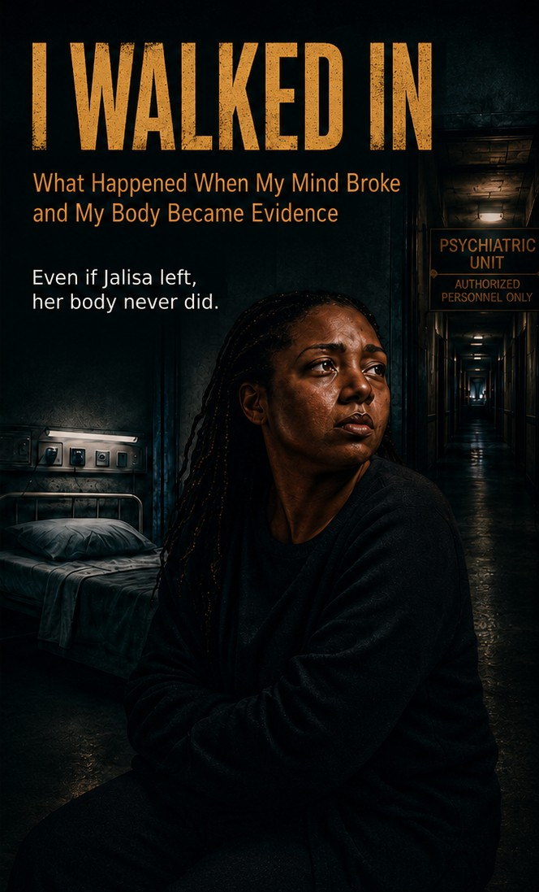

What Happened When My Mind Broke and My Body Became Evidence
She walked in during a psychiatric crisis.
She did not walk out the same.

When Jalisa Basnight entered a behavioral health facility, she was not calm, clear, or well. She was hearing a voice, moving through fear and faith, and saying things she would later have to answer for.
But mental illness did not erase her humanity.
It did not erase her body.
And it did not erase the duty of care owed to her.
Inside the facility, something happened that changed the course of her life.
As a former insurance claims adjuster, Basnight knew how to read what was written, what was missing, and what a timeline could reveal. After her discharge, she began doing what she had once done professionally: gathering records, comparing documentation, reconstructing events, and asking why the paper trail did not fully match what her body had survived.
I Walked In is a forensic memoir about what happens when a psychiatric diagnosis is used to make a patient's physical pain easier to dismiss — and what one woman did to make sure her body's evidence could not be ignored.
The exact moment my mind could be questioned, my body became the evidence.
A psychiatric crisis told from the inside, through fear, faith, and a voice she could not quiet.
A claims adjuster's eye turned on her own chart: what was written, what was missing, and what the timeline shows.
The long work of being believed when a diagnosis makes your truth easier to question.
When a psychiatric emergency and a physical injury arrive together, care can narrow to the diagnosis alone, and the body goes unseen. For Black women, who are too often read as difficult or endlessly resilient instead of hurt, that blind spot can be dangerous.
A psychiatric diagnosis does not cancel a patient's ability to report physical pain.
Institutions owe a duty of care to every patient in their custody, whatever that patient's mental state.
Patients can keep their own timeline, so their account does not depend on templated or copied-forward notes.
This book describes psychiatric crisis, involuntary hospitalization, physical injury, and medical neglect. Please read with care.
Get your copy